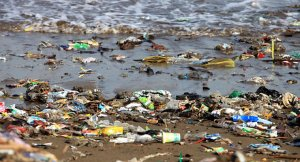

Somos una organización no gubernamental que lucha contra el cambio climático, la pérdida de biodiversidad y la contaminación de los ecosistemas, aunque todo ello son distintas caras de la misma moneda. Desde el inicio de la era industrial, hace aproximadamente 150 años, los ritmos de crecimiento de gases de efecto invernadero, la contaminación en los oceanos y playas, la deforestación y la extinción de especies como consecuencia de nuestros hábitos han crecido vertiginosamente. Estamos en una carrera contra el tiempo.
Como explica el científico Michael Mann, el derretimiento de los polos consecuencia del aumento de la temperatura del planeta esta frágilmente controlado, pero estamos muy cerca de alcanzar un punto de no retorno, el cual una vez atravesado, devastará los polos norte y sur, causando grandes inundaciones y un desequilibrio de los biomas sin precedentes. Esta solo es una de las tantas facetas de nuestro problema, como el aumento de dióxido de carbono en la atmósfera, la caza insostenible de delfines y ballenas o la deforestación. Por ello este es el momento tomar acción de cara a las futuras generaciones, y apagar la gran bomba de tiempo de nuestros días.
